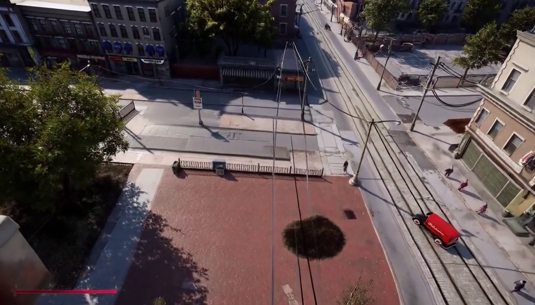

接下来有 21个题目。请按页面提示一步步完成本次问卷，预计 20–30 分钟。
假设你希望基于一张静态图像生成视频，并控制视频中的相机运动。请综合考虑交互性、便利性、准确性和实际可用性，选择你最愿意使用的方式。

1345.7
0.0
448.0
1344.2
256.0
1.0
−0.4110
0.5995
−0.6868
7.6949
−0.4942
0.4865
0.7205
−7.2699
0.7660
0.6355
0.0963
−2.0484
0.0000
1.0000
[R₀ | t₀]
[R₆₀ | t₆₀]
[R₁₂₄ | t₁₂₄]
[R₁₈₆ | t₁₈₆]
[R₂₄₈ | t₂₄₈]
✓ 提交成功，感谢参与！